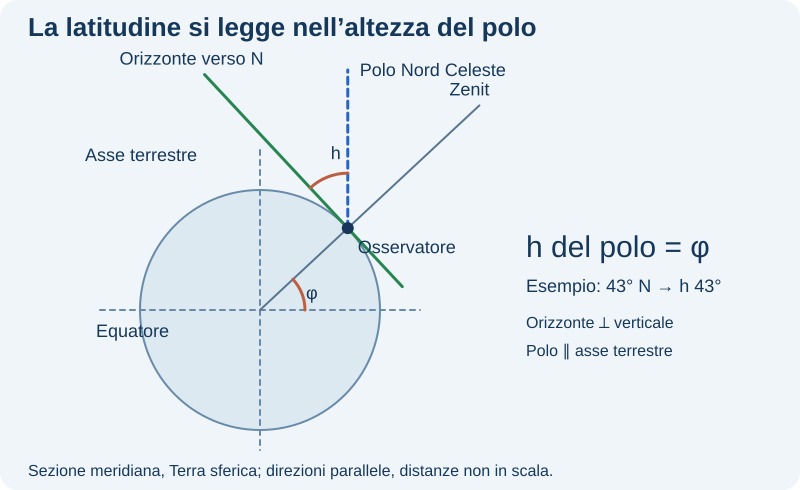
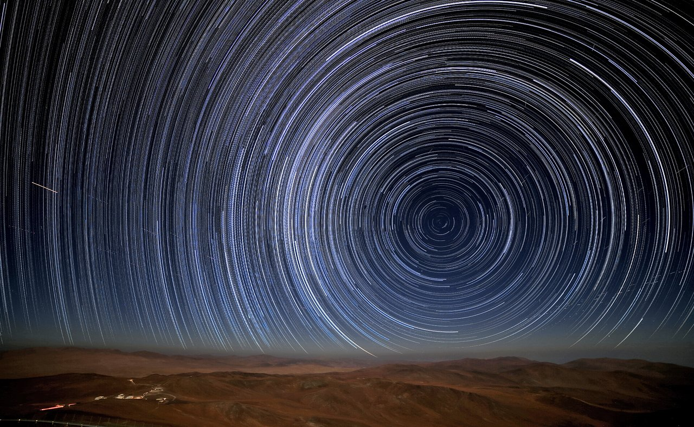
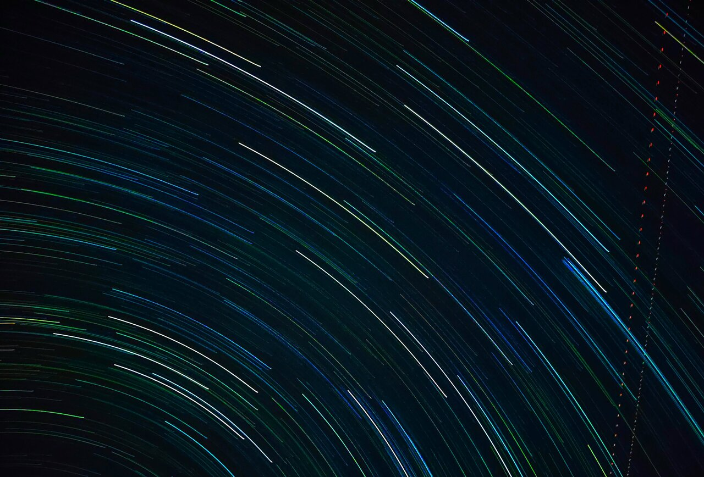
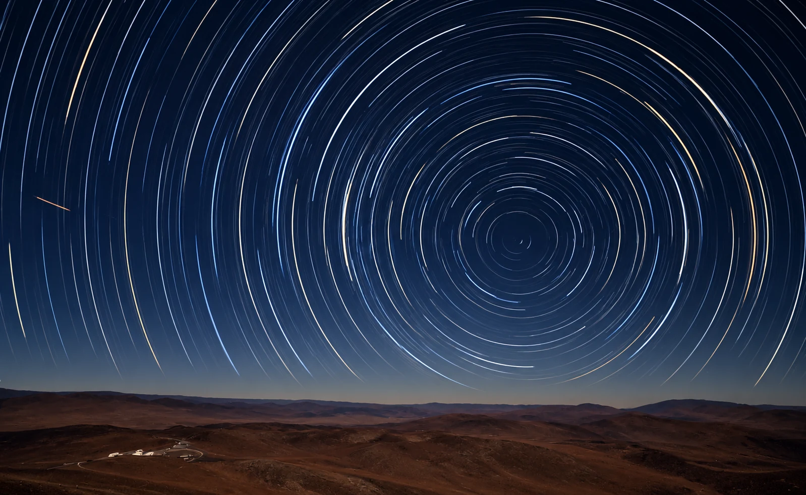

1. Rotazione, poli e orizzonte: il quadro fondamentale
Il moto apparente del cielo nasce dal rapporto fra un osservatore solidale con la Terra e direzioni stellari lontane. La Terra ruota da ovest verso est: nel complesso il cielo ci appare procedere da est verso ovest. Non tutte le traiettorie, però, tagliano l’orizzonte. Vicino al polo gli astri descrivono cerchi che, alle nostre latitudini, possono restare interamente sopra di esso.

A 43° nord, il polo nord celeste si trova geometricamente a 43° sull’orizzonte nord. All’Equatore è sull’orizzonte; al Polo Nord raggiunge lo zenit. Questo cambiamento modifica quali stelle possono essere viste e l’inclinazione delle loro traiettorie. Nell’emisfero australe il riferimento elevato diventa il polo sud.
Una stella sorge quando attraversa l’orizzonte geometrico verso l’alto, culmina superiormente quando attraversa il meridiano raggiungendo la massima altezza, e tramonta quando attraversa l’orizzonte verso il basso. Alberi, edifici, atmosfera e luce diurna possono impedirci di vederla anche se la geometria dice che è sopra l’orizzonte. Il meridiano locale è il cerchio che passa per nord, zenit, sud e nadir: non una costellazione o un filo reale nel cielo.
A 43° N il limite geometrico per una stella circumpolare boreale è δ maggiore di +47°. Una stella con δ=+65° rimane sopra l’orizzonte; una con δ=0° sorge e tramonta. Seleziona questi due valori nel laboratorio e confronta l’andamento durante un giro completo. Non chiamare circumpolare tutta una costellazione senza controllarne le singole stelle.
Percorso ispirato all’articolo di Fabio Rocca, Impariamo il cielo — Prima dell’oculare, fornito dall’autore per AD ASTRA. Spiegazione rielaborata per questa lezione.
Riferimenti: ESO Supernova · Giorno, notte e rotazione terrestre · Treccani · Coordinate astronomiche, lezione PDF
2. Il movimento e il punto di vista
La Terra ruota verso est; rispetto al paesaggio, il cielo mostra un movimento apparente nel verso opposto. Non è necessario immaginare le stelle che percorrono davvero un cerchio intorno a noi: è la direzione della nostra visuale a cambiare con la del pianeta.
Rispetto alle stelle lontane, una rotazione terrestre dura circa 23 ore e 56 minuti. Il giorno solare medio dura 24 ore perché, mentre ruota, la Terra avanza anche lungo la sua orbita. Per riallinearsi con il Sole occorre una piccola rotazione supplementare. Per questo le stelle ritornano alla stessa posizione un po’ prima secondo l’orologio civile.
Riferimenti: OpenStax · Earth and Sky · OpenStax · The Sky Above
Osserva, confronta, riconosci

R. Wesson/ESO · CC BY 4.0. Fotografia d’archivio, file non modificato.

Segui le parti dello strumento e confrontale con il percorso descritto nel testo.
Govind Gurjar / IAU OAE · CC BY 4.0.Le stelle percorrono archi, il terreno resta
Prima scegli un confronto. Poi osserva che cosa cambia e collega l’effetto alla spiegazione.
Il modello richiede JavaScript; il principio e le immagini restano leggibili.
Modello didattico originale AD ASTRA: semplificazioni dichiarate nella figura. Il movimento, quando disponibile, parte solo su richiesta.
3. Ore civili, rotazione e angolo orario
Per seguire una stella rispetto al meridiano locale usiamo l’angolo orario H. H = 0 corrisponde al transito superiore sul meridiano; valori negativi descrivono la fase precedente e valori positivi quella successiva, nella convenzione adottata nel laboratorio.
L’angolo orario si può esprimere in ore angolari: una sua variazione di un’ora corrisponde a 15°. Non significa che l’altezza della stella aumenti o diminuisca di 15°: quel valore riguarda la rotazione attorno all’asse celeste. L’altezza dipende anche da latitudine e declinazione, e la sua variazione può rallentare vicino alla .
Durante la notte un orologio civile aiuta a registrare gli istanti, ma non sostituisce H. Due stelle con ascensioni rette differenti hanno angoli orari differenti allo stesso istante. Quando leggi una curva del laboratorio, interpreta dunque il suo asse come una coordinata del moto, non come un programma universale degli orari di osservazione.
Riferimenti: Treccani · Coordinate astronomiche, lezione PDF · OpenStax · Earth and Sky
4. Leggere le tracce stellari

Ritrova la fotografia commentata e i suoi riferimenti ↑
Una posa lunga rende visibile il cambiamento di direzione. Il centro della rotazione apparente identifica il polo celeste; non necessariamente vi si trova una stella luminosa. La lunghezza degli archi dipende anche dalla durata della ripresa, e la loro forma nell’immagine dipende dalla proiezione dell’obiettivo.
Riferimenti: ESO Supernova · Giorno, notte e rotazione terrestre
5. Quali stelle possono tramontare
A latitudini settentrionali, alcune stelle percorrono cerchi che restano sopra l’orizzonte astronomico: sono . Altre attraversano l’orizzonte e quindi sorgono e tramontano; una regione attorno al polo sud celeste resta invece sempre sotto l’orizzonte.
Indicando con φ la latitudine nord e con δ la declinazione, una stella è circumpolare se δ > 90° − φ nel modello ideale. A 43° nord, il limite è +47°. Al confine la traiettoria è tangente all’orizzonte: ostacoli e rifrazione rendono la situazione osservativa meno netta di quanto suggerisca il solo disegno.
La circumpolarità appartiene alla coppia stella–luogo, non al nome di una costellazione intera. A 45° N una stella con declinazione +49° rimane, nel modello geometrico, almeno 4° sopra l’orizzonte. A 38° N la stessa stella arriva circa 3° sotto: il suo indirizzo equatoriale non è cambiato, è cambiato l’orizzonte dell’osservatore. Alberi, rilievi e rifrazione rendono ancora diversa l’osservazione concreta. Quando confronti le carte stagionali mantieni fissa la latitudine: le figure ruotano rispetto all’orizzonte, ma non scivolano arbitrariamente verso l’equatore celeste.
Riferimenti: Treccani · Coordinate astronomiche, lezione PDF
6. Una traiettoria che puoi prevedere
Segui una sola traiettoria e cerca dove incontra l’orizzonte. Poi cambia latitudine: osserva il disegno degli archi, non soltanto il numero.
Il laboratorio usa un astro ipotetico con declinazione costante. Varia la latitudine e la declinazione, poi sposta l’angolo orario. La curva riporta l’altezza durante un intero giro: i tratti sotto zero corrispondono a direzioni sotto l’orizzonte astronomico.
Il modello calcola la geometria senza ostacoli né rifrazione. Non include luminosità, luce del Sole o condizioni meteorologiche. Un tratto sopra zero indica una possibilità geometrica, non garantisce l’osservabilità. Questo è particolarmente importante se la traiettoria resta vicina all’orizzonte.
Osserva la differenza fra una stella che attraversa il riferimento e una che rimane sempre sopra di esso. Cambiando luogo, la stessa declinazione può passare da una categoria all’altra. “Circumpolare” non è quindi un’etichetta assoluta da assegnare senza specificare l’osservatore.
Riferimenti: Treccani · Coordinate astronomiche, lezione PDF
7. Culminazione e altezza massima
Approfondimento numerico precedente · facoltativo
Per una stella al transito superiore, nel modello geometrico l’altezza massima è h = 90° − |φ − δ|. Se osservi da 43° nord una stella con declinazione +20°, il risultato è 67°. Con declinazione +43°, la stessa stella ipotetica passerebbe allo zenit.
Questa formula chiarisce che non tutte le stelle culminano nella stessa parte del cielo. Se la declinazione è maggiore della latitudine, il transito superiore può avvenire a nord dello zenit; se è minore, avviene sul lato sud. La familiarità con “le stelle salgono verso sud” non deve trasformarsi in una regola universale.
I casi limite meritano attenzione. Una traiettoria tangente all’orizzonte non corrisponde automaticamente a un’osservazione comoda: rifrazione, rilievi e trasparenza possono cambiare il risultato pratico. Per pianificare un bersaglio, privilegia un’altezza sufficiente e verifica le condizioni locali.
Riferimenti: Treccani · Coordinate astronomiche, lezione PDF
8. Come leggere una foto di tracce stellari
Le tracce sono l’integrazione del movimento durante un intervallo, non tante stelle curve nello stesso istante. Se la camera rimane ferma rispetto al terreno, ogni punto luminoso lascia un percorso sul sensore. Una camera che insegue il moto del cielo può invece mantenere ferme le stelle e mostrare un comportamento differente del paesaggio.
Confronta la fotografia con la curva del modello: la curva descrive soltanto l’altezza di un astro durante il giro; la foto proietta sul piano del sensore un insieme di direzioni. Non devono avere la stessa forma. Ciò che accomuna le due rappresentazioni è il movimento apparente prodotto dalla rotazione terrestre.
Nel tuo appunto specifica sempre quale grandezza rappresenta un’immagine: posizione istantanea, traiettoria o somma di luce raccolta nel tempo. Questa abitudine ti permetterà di interpretare anche le immagini astronomiche delle lezioni successive.
Riferimenti: ESO Supernova · Giorno, notte e rotazione terrestre
9. Una previsione da verificare
In Stellarium, scegli una città italiana e una stella. Mantieni la data e confronta le posizioni alle 21:00 e alle 23:00. Annota altezza e azimut, poi ripeti per una stella vicina al polo. Non attribuire lo spostamento alla sola distanza della stella: confronta soprattutto le direzioni e la posizione rispetto al polo.
Riferimenti: Stellarium · Guida ufficiale
Metti alla prova quello che hai capito
Scegli una risposta e confrontala con la spiegazione. Se cambi idea, riprova: conta capire il passaggio.
Puoi tornare allo stesso tetto senza portare strumenti. Due appunti presi a distanza di tempo trasformano un’impressione vaga in un movimento che hai riconosciuto con i tuoi occhi.
Testo originale AD ASTRA, sviluppato dal quadro didattico ricavato dal confronto di circa 60 risorse e verificato sui riferimenti pertinenti indicati in questa lezione. Le fotografie mostrano soggetti reali; i diagrammi spiegano il modello e dichiarano le semplificazioni.